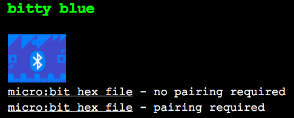

This is an introduction on how you can exchange information between a micro:bit and a Raspberry Pi.
We will need to install the Bluezero from Python Package Index (PyPI).
These instructions are targeted at a Raspberry Pi running a Raspbian Stretch release:
sudo pip3 install bluezero
We will download the hex file from the Bitty Software website. The hex file is available at:
https://www.bittysoftware.com/downloads.html#bitty_blue
We will use the “no pairing required” hex file

The first time the micro:bit is powered up you will need to rotate it so a circle is drawn on the micro:bit. Once this is done we are ready to pair it with the Raspberry Pi
If this is the first time this combination of Raspberry Pi and micro:bit have been used together then you will need to ensure the micro:bit is in the list of known Bluetooth devices on the Raspberry Pi.
Before we can do any Python programming to connect to the micro:bit we need search and connect to it so that it is in the known device list.
Note: there is ‘tab’ command completion available within the bluetoothctl tool.
Note: The address of your Raspberry Pi and micro:bit will be different so they are represented in this tutorial as xx:xx:xx:xx:xx:xx and yy:yy:yy:yy:yy:yy respectively Using bluetoothctl
We will use the command line tool “bluetoothctl” to do this pairing.
Launch:
$ bluetoothctl
And you will get you the new prompt:
[bluetooth]#
You can type help to get a full list of the commands.
Check that you have Powered: yes when you type show.
Controller xx:xx:xx:xx:xx:xx Name: raspberrypi Alias: raspberrypi Class: 0x000000 Powered: yes Discoverable: no Pairable: yes UUID: Generic Attribute Profile (00001801-0000-1000-8000-00805f9b34fb) UUID: A/V Remote Control (0000110e-0000-1000-8000-00805f9b34fb) UUID: PnP Information (00001200-0000-1000-8000-00805f9b34fb) UUID: Generic Access Profile (00001800-0000-1000-8000-00805f9b34fb) UUID: A/V Remote Control Target (0000110c-0000-1000-8000-00805f9b34fb) Modalias: usb:v1D6Bp0246d052E Discovering: no
If it is powered not yes then type power on
Make a note of the controller address as you will need it later
You will need to get bluetoothctl to search for micro:bits that are close by.
When you see your micro:bit you can stop the search.
[bluetooth]# scan on Discovery started [CHG] Controller xx:xx:xx:xx:xx:xx Discovering: yes [NEW] Device yy:yy:yy:yy:yy:yy BBC micro:bit [?????] [bluetooth]# scan off
We need to specify the Bluetooth address of the micro:bit we want to connect to. Once it has connected because we have used “no pairing required” hex file the micro:bit will become part of the known (or paired) devices so we can disconnect.
[bluetooth]# connect yy:yy:yy:yy:yy:yy
Attempting to connect to yy:yy:yy:yy:yy:yy
[CHG] Device yy:yy:yy:yy:yy:yy Connected: yes
Connection successful
[BBC micro:bit [?????]]# disconnect
And we are done with bluetoothctl so we can type exit
This first Python example is to send text to display on the micro:bit.
from bluezero import microbit
ubit = microbit.Microbit(adapter_addr='xx:xx:xx:xx:xx:xx',
device_addr='yy:yy:yy:yy:yy:yy')
My_text = 'Hello, world'
ubit.connect()
While my_text is not '':
ubit.display_text(my_text)
my_text = input('Enter message: ')
ubit.disconnect()
Display an image of which button needs pressing
from bluezero import microbit
ubit = microbit.Microbit(adapter_addr='xx:xx:xx:xx:xx:xx',
device_addr='yy:yy:yy:yy:yy:yy')
ubit.connect()
while ubit.read_button_a() < 1:
ubit.display_pixels(0b00000,
0b01000,
0b11111,
0b01000,
0b00000)
time.sleep(0.5)
ubit.display_clear()
while ubit.read_button_b() < 1:
ubit.display_pixels(0b00000,
0b00010,
0b11111,
0b00010,
0b00000)
time.sleep(0.5)
ubit.display_clear()
ubit.disconnect()
This last exercise uses information from the micro:bit sensors to control the Turtle graphics
Pressing Button A uses the magnetometer to rotate to the Turtle
Pressing Button B exits the code
With no buttons pressed you can move the Turtle forwards and backwards by tilting the micro:bit
import turtle
from time import sleep
from bluezero import microbit
oogway = turtle.Turtle()
ubit = microbit.Microbit(adapter_addr='xx:xx:xx:xx:xx:xx',
device_addr='yy:yy:yy:yy:yy:yy')
looping = True
ubit.connect()
oogway.write('Ready')
while looping:
if ubit.read_button_a() > 0:
oogway.setheading(ubit.read_bearing())
sleep(.25)
elif ubit.read_button_b() > 0:
ubit.display_pixels(0b10001,
0b10001,
0b01110,
0b10001,
0b10001)
oogway.write('Exit')
looping = False
else:
x, y, z = ubit.read_accelerometer()
if y > 0.5:
oogway.backward(10)
if y < -0.5:
oogway.forward(10)
ubit.disconnect()